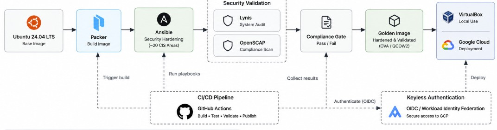

Golden Image Factory
A reproducible Ubuntu 24.04 image factory that turns security hardening and compliance validation into an automated delivery pipeline.
88/100 minimum Lynis score required by the pipeline
- Packer and Ansible automate image builds for local and cloud environments.
- CIS-aligned configuration, Lynis and OpenSCAP audits, and post-hardening validation before publication.
- GitHub Actions uses OIDC / Workload Identity Federation to avoid static cloud keys.
